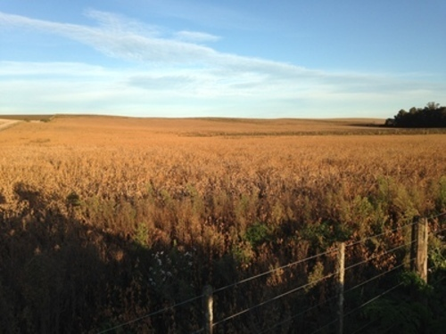
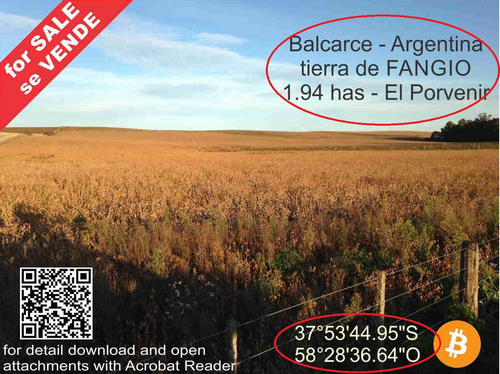
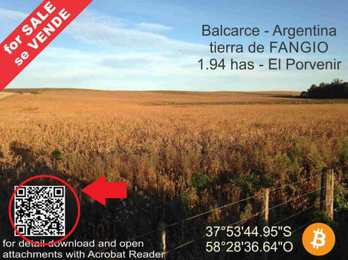

El 25 de Abril, del año 2023, he establecido las bases de la Propiedad Digital, he ingresado un inmueble o activo del mundo real (RWA) en la blockchain de Bitcoin; de manera tal que este activo se encuentra ahora en esa cadena y solamente puede ser transaccionado a traves de ella. A la fecha es el único activo del mundo real en la blockchain de #Bitcoin con documentacion formal, legal y certificaciones. Todavia no se entiende la importancia que esto tiene, no se entiende su finalidad, pero voy a explicarte porque lo he realizado?
Que es el ordinal 1662363?
Activo físico del mundo real
El inmueble es una fracción de Campo en Balcarce, 1.94 hectáreas de tierra 100% agricola, rodeadas de las sierras mas antiguas del mundo(sistema de Tandilia); que pertenecio originalmente a la familia Fangio y que llevan el nombre de: "El Porvenir". Ingresar mas datos...

Campo en Balcarce, Buenos Aires, Argentina "El Porvenir" - Tierra de Fangio
Entendiendo el Ordinal o Artefacto Digital.
El Ordinal relaciona el mundo físico real(real estate) con la blockchain de Bitcoin, especificamente existe un satoshi, en la blockchain, que gracias a la teoria de los ordinales puede ser identificado como único; y gracias a las mejoras de SegWit y Taproot, puede guardar la informacion suficiente para crear este artefacto digital que vive en la blockchain.
Te lo explico paso a paso.
En la imagen del ordinal vas a observar En la parte superior derecha, la localidad, el pais, la superficie y el nombre del campo. En la parte inferior derecha vas a encontrar las coordenadas para ubicar el inmuble fisicamente en el mundo.

En la parte inferior izquierda se encuentra un QR, que da acceso al marco legal, formalidad o compliance al ORDINAL. Este QR es un acceso al colegio de escribanos de la provincia de Buenos Aires, Argentina, donde esta registrado el inmueble formalmente. En el se encuentran las certificaciones de la escribania interviniente para la creacion del ORDINAL, las certificaciones del colegio de escribanos y las condiciones en las que el ordinal debe cunmplir en la blockchain de Bitcoin para que el inmueble tenga otro dueño, propietario o titular.

Para poder acceder a esta documentacion debes tener instalado el Acrobat Reader. En el colegio de escribanos de Buenos Aires, Argentina, encontrarás la documentacion certificada que te permite ser el nuevo dueño, propietario o titular de esta granja o campo en Argentina.
Colegio de Escribanos de la Provincia de Buenos Aires, ArgentinaDatos para ingresar a la documentación formal en la plataforma:
Serie: FADOA, Número: 31784
Notario: CANTO PATRICIO, Partido: BALCARCE
Registro: 12, CVS: ea14c694fe5f63bb5512aa7275a02ff097b731e5

Acceso a datos formales en Colegio de Escribanos.
Esta documentacion consiste en tres archivos:
Una Oferta Irrevocable de Venta, la cual es muy importante. A traves de esta oferta de venta con caracter de IRREVOCABLE yo, Cristian Falcone, como titular de la propiedad, el propio ofertante (quien hace la oferta) renuncio a mi facultad de retirarla durante un período de tiempo determinado. Es decir, me comprometo a mantener la oferta en pie por un plazo específico, sin poder retractarme de ella durante ese lapso. Es decir, hasta que la operación se concrete y el ORDINAL pase de mi billetar a otra billetera, siendo otra persona su nuevo dueño. Todo sobre la blockchain de Bitcoin para tener la mayor robustez y seguridad en la operación.
Documento formal que da el marco legal al RWA.
El documento público emitido por un notario. Su función principal es dar fe pública de que una firma específica fue puesta en presencia del escribano y que corresponde a la persona cuya identidad fue verificada. Existiendo en el documento los datos de archivo interno de la escribania donde queda registrada la actuacion (Libro/Acta/Folio). El notario CERTIFICA que la firma que obra en un "documento digital embebido" (es decir, un documento digital que está inserto o adjunto a esta certificación, en este caso la Oferta Irrevocable de Venta ) es auténtica.
Certificación escribania, verificacion autenticidad.
El documento que certifica Firma y Reproducción Digital, emitido por el Colegio de Escribanos de la Provincia de Buenos Aires.Este documento es una prueba digital de autenticidad y validez de firmas electrónicas/digitales. Complementa el documento principal (en este caso, la Oferta Irrevocable de Venta mencionada previamente), confirmando que las firmas en ese documento son legítimas y que fueron puestas bajo estándares de seguridad digital notariales. La referencia CVS: ea14c694fe5f63bb5512aa7275a02ff097b731e5 Este es un código único de verificación (similar a un hash) que permite rastrear y validar la integridad del documento firmado digitalmente en la plataforma del Colegio de Escribanos.
Certificacion Colegio Escribanos Buenos Aires. Grado maximo de Autenticación.
El Futuro de la Propiedad Digital
El Ordinal #1662363 es el primer activo del mundo real tokenizado en Bitcoin: un terreno de 1.94 hectáreas en Balcarce, Argentina, inscrito el 25 de abril de 2023. Certificado por el Colegio de Escribanos, "Tierra de Fangio" une lo físico con la blockchain, ofreciendo transparencia, seguridad y fraccionalización. ¡Descubrí cómo la propiedad digital está transformando el mundo!